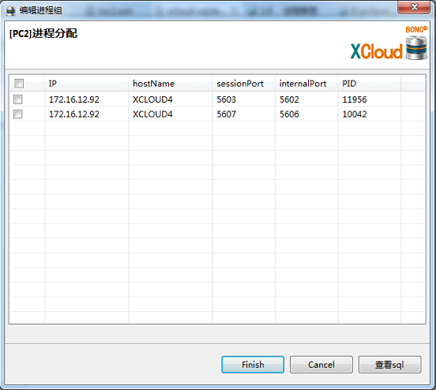

①、打开SQL Developer管理平台，使用systemadmin用户登录，右击选中数据库，弹出分配进程和回收进程界面
②、点击分配进程或回收进程，弹出分配进程或回收进程对话框，用户通过勾选按钮来分配或收回进程，点击查看sql按钮查看对应的sql语句，如图
①、点击进程视图，查看进程分配情况，如图：
①、打开SQL Developer管理平台，通过左侧导航树以system用户登陆，右击进程组结点，如下图所示：
②、点击新建进程组，弹出如下对话框，输入进程组名，点击确定按钮，点击查看sql按钮可查看当前操作生成的sql语句。如下图所示：
①、选择进程组结点下的子节点，右击选择删除按钮，弹出如下确认对话框，点击确定按钮，删除进程组：
①、选择进程组结点下的子节点，右键选择进程分配钮或进程回收按钮，弹出如下对话框,分配或收回进程后，点击完成，完成操作，点击查看sql，查看sql语句：

①、选择用户结点下的子节点，右键选择进程组管理，弹出如下对话框,分配进程组后，点击完成，完成操作，点击查看sql，查看sql语句：
①、选择用户结点，右键选择进程组管理，弹出如下对话框,分配进程组后，点击完成，完成操作，点击查看sql，查看sql语句：